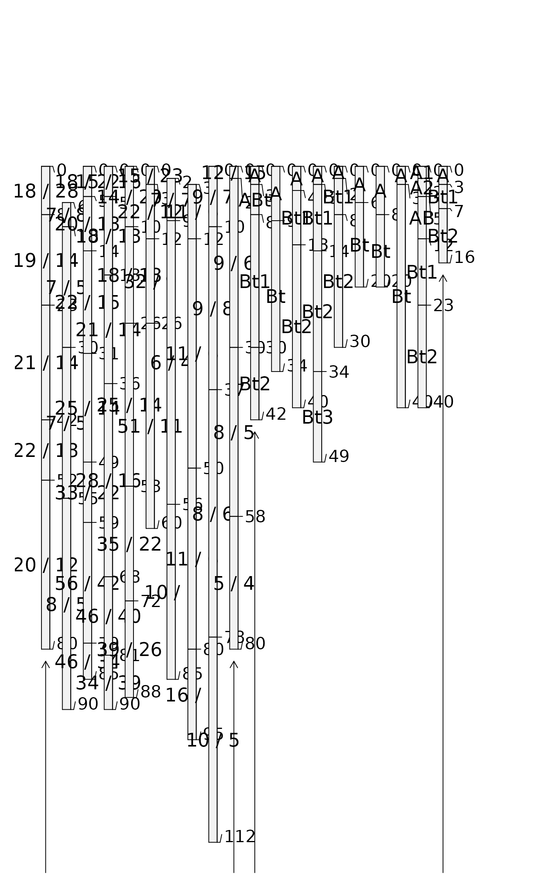
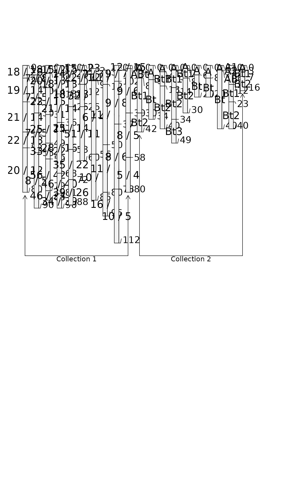
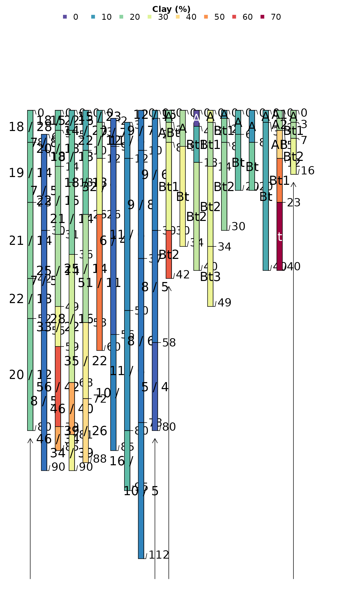
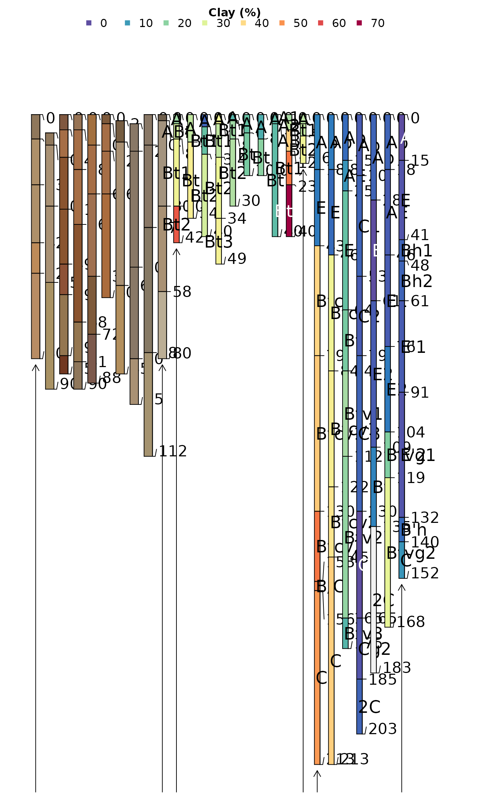

Plot Multiple SoilProfileCollection Objects
Usage
plotMultipleSPC(
spc.list,
group.labels,
args = rep(list(NA), times = length(spc.list)),
merged.legend = NULL,
merged.colors = c("#5E4FA2", "#3288BD", "#66C2A5", "#ABDDA4", "#E6F598", "#FEE08B",
"#FDAE61", "#F46D43", "#D53E4F", "#9E0142"),
merged.legend.title = merged.legend,
arrow.offset = 2,
bracket.base.depth = 95,
label.offset = 2,
label.cex = 0.75,
...
)Arguments
- spc.list
a list of
SoilProfileCollectionobjects- group.labels
a vector of group labels, one for each
SoilProfileCollectionobject- args
a list of arguments passed to
plotSPC, one for eachSoilProfileCollectionobject- merged.legend
name of a horizon level attribute from which to create thematic sketches and merged legend
- merged.colors
vector of colors used to create thematic sketches from a shared horizon level attribute
- merged.legend.title
legend title
- arrow.offset
vertical offset in depth from base of start / end profiles and group bracket arrows
- bracket.base.depth
baseline depth used for group brackets
- label.offset
vertical offset of group labels from baseline
- label.cex
label size
- ...
additional arguments to the first call to
plotSPC
Details
Combine multiple SoilProfileCollection objects into a single profile sketch,
with annotated groups.
See examples below for usage.
Examples
##
## Simple Example
##
# using default arguments to plotSPC()
# load sample data
data(sp3)
data(sp4)
# promote to SoilProfileCollection
depths(sp3) <- id ~ top + bottom
depths(sp4) <- id ~ top + bottom
# combine into a list
spc.list <- list(sp3, sp4)
# argument list
arg.list <- list(
list(name='name', id.style='top'),
list(name='name', id.style='side')
)
# plot multiple SPC objects,
# with list of named arguments for each call to plotSPC
par(mar=c(1,1,3,3))
plotMultipleSPC(
spc.list,
group.labels = c('Collection 1', 'Collection 2'),
args = arg.list,
bracket.base.depth = 120, label.cex = 1
)

# specify a different max.depth
plotMultipleSPC(
spc.list,
group.labels = c('Collection 1', 'Collection 2'),
args = arg.list,
bracket.base.depth = 120, label.cex = 1,
max.depth = 250
)

##
## Merged Legend Example
##
# merged legend based on hz attribute 'clay'
# reset sample data
data(sp3)
data(sp4)
# promote to SoilProfileCollection
depths(sp3) <- id ~ top + bottom
#> This is already a SoilProfileCollection-class object, doing nothing.
depths(sp4) <- id ~ top + bottom
#> This is already a SoilProfileCollection-class object, doing nothing.
# combine into a list
spc.list <- list(sp3, sp4)
# argument list
arg.list <- list(
list(name='name', id.style='top'),
list(name='name', id.style='side')
)
par(mar=c(1,1,3,3))
plotMultipleSPC(
spc.list,
group.labels = c('Collection 1', 'Collection 2'),
args = arg.list,
label.cex = 1,
merged.legend = 'clay', merged.legend.title = 'Clay (%)'
)

##
## Complex Merged Legend Example
##
# create a merged legend from "clay" in sp4 and jacobs2000
# use "soil_color" from sp3
# reset sample data
data(sp3)
data(sp4)
data(jacobs2000)
# promote to SoilProfileCollection
depths(sp3) <- id ~ top + bottom
#> This is already a SoilProfileCollection-class object, doing nothing.
depths(sp4) <- id ~ top + bottom
#> This is already a SoilProfileCollection-class object, doing nothing.
# remove 'clay' column from sp3
sp3$clay <- NULL
# combine into a list
spc.list <- list(sp3, sp4, jacobs2000)
# try some variations on the default arguments
# `clay` is missing in the first SPC, safe to specify another column for colors
arg.list <- list(
list(color = 'soil_color', id.style='top', name = NA, width = 0.3, hz.depths = TRUE),
list(name='name', id.style='side', name.style = 'center-center'),
list(name='name', id.style='side', name.style = 'left-center', hz.depths = TRUE)
)
par(mar=c(1,1,3,3))
plotMultipleSPC(
spc.list,
group.labels = c('sp3', 'sp4', 'jacobs2000'),
label.offset = 3,
args = arg.list,
merged.legend = 'clay', merged.legend.title = 'Clay (%)',
depth.axis = list(line = 0)
)
